Pastoral Care by Classifications ¶
Chaque pasteur, conseiller en relation d'aide, et superviseur autirsé peut gérer le suivi pastoral individuel ou familiale
Activer le suivi pastoral pour un utilisateur du système¶
Pour assigner le rôle de suivi pastoral
Aller:
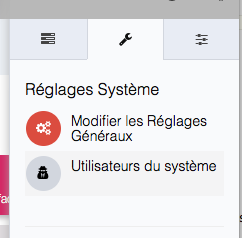
Sélectionner un utilisateur, puis éditer le comme ci-dessous
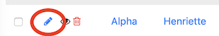
Puis cocher la case à cocher comme ci-dessous
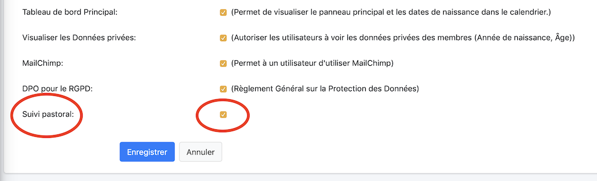
L'utilisateur pourra maintenant ajouter des notes de suivi pastoral
Créer une note de suivi pastoral pour une personne¶
Rechercher la personne via le menu dans la barre latérale gauche
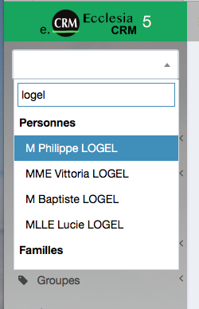
Voici son profile :
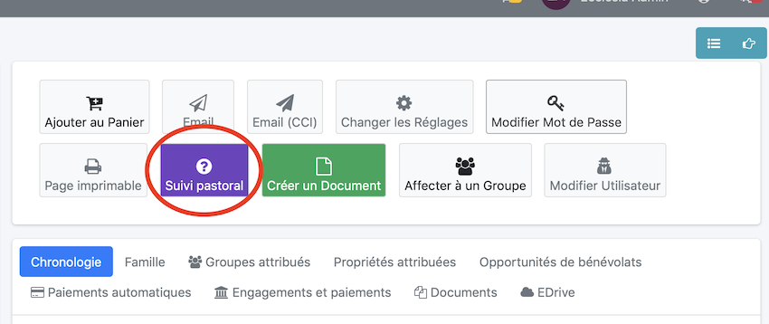
On peut maintenant cliquer le bouton et commencer à gérer son suivi pastoral
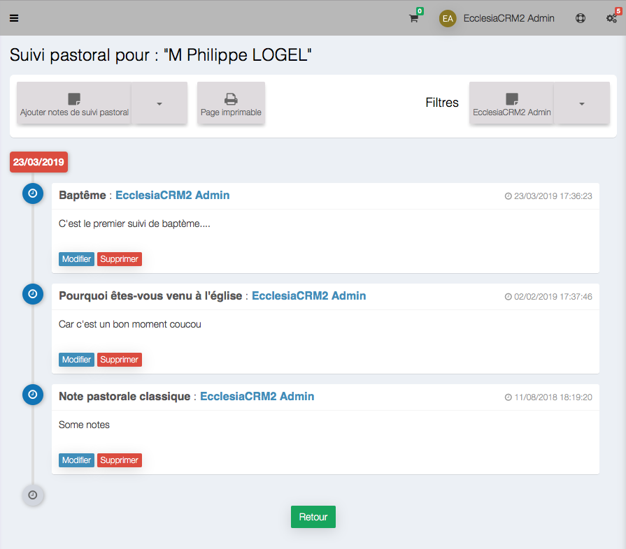
La vue est séparée en deux parties :
- Les boutons pour choisir le type de suivi pastoral, imprimer ou les filtres par conseiller pour ceux qui ont suivis cette personne
- et la partie personalisation qui se trouve au niveau de la flèche comme ci-dessous
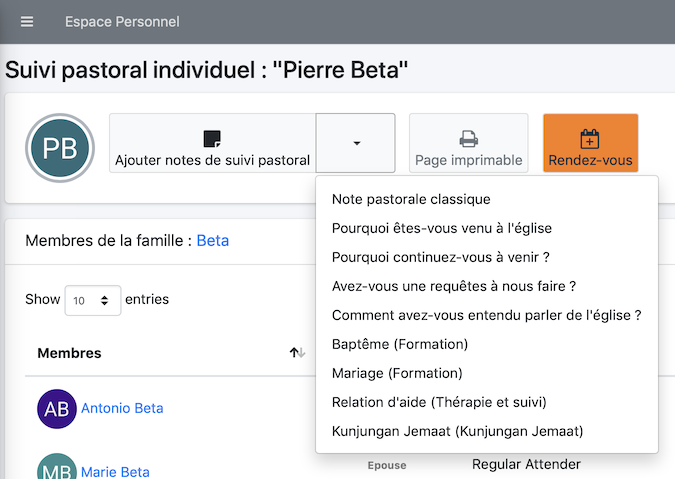
-
Par exemple: choisir "Note de suivi pastoral classqieu" dans le menu
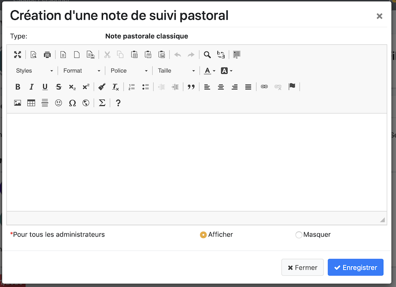
- Il sera possible dans la fenêtre ci-dessus, de glisser déposer des images documents dans la zone
- vous pourrez glisser déposer des documents, images comme ci-dessous
- Vous pourrez utiliser des modèles de documents Modèle
- ajouter des tableaux
- etc ...
Note les boutons radios "Afficher" "Masquer" permetent de masquer ou afficher le contenu de la note aux autres conseillers de suivi pastoral
Il peut être utile nottament dans le cas de la relation d'aide de masquer le suivi
-
Après suivi, voici le résultat
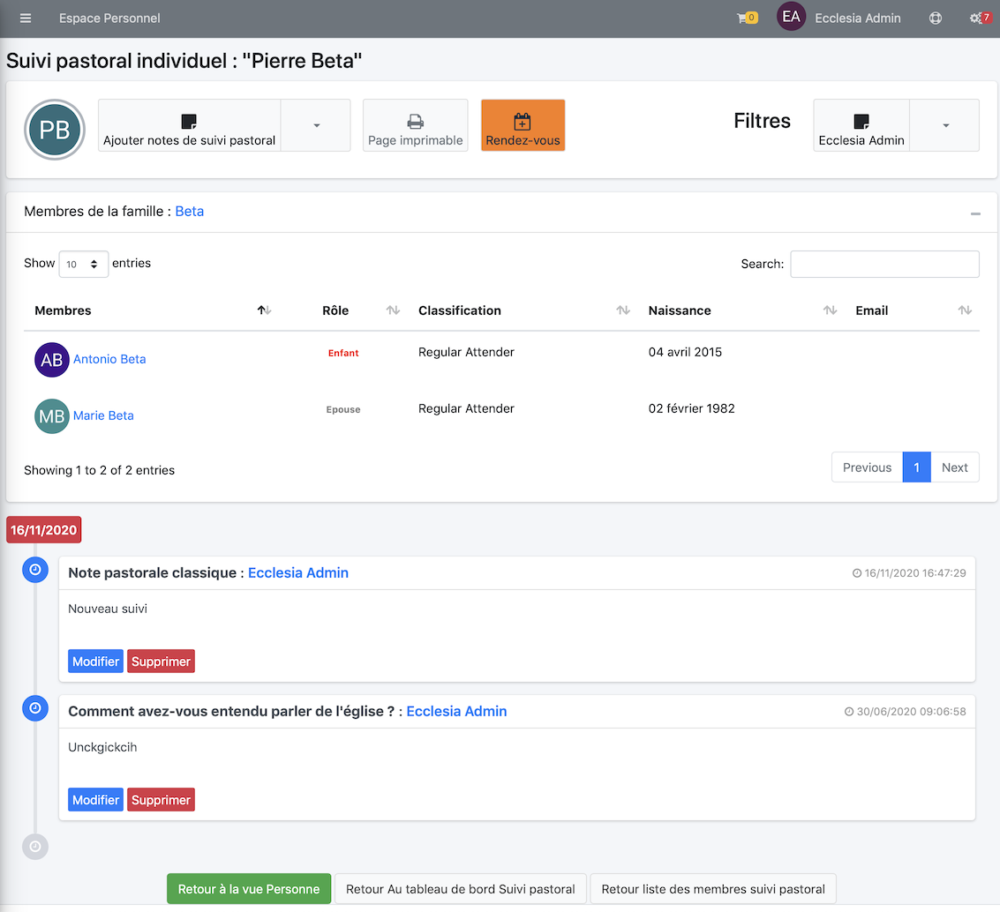
Créer une note de suivi pastoral pour une famille¶
Vous pourrez en saisir une pour une famille également :
- Rechercher une famille
-
puis suivre la même démarche que pour une personne (voir ci-dessus)
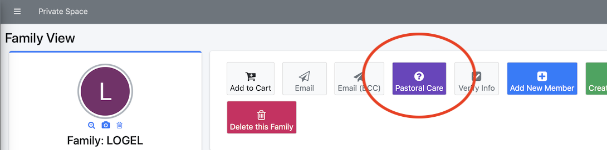
Vous pourrez ajouter la même note de suivi pour tous les membres d'une même famille en cochant la case "Inclure" :
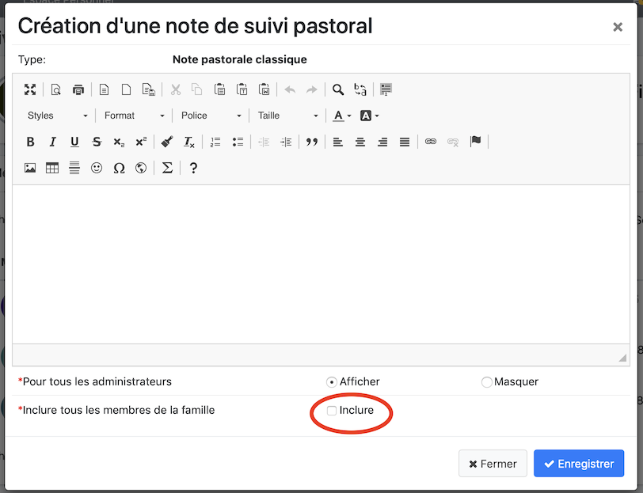
Filtrer par pasteur ou conseiller¶
Pour cela cliquer le bouton à droite
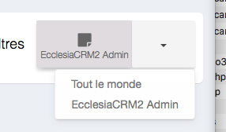